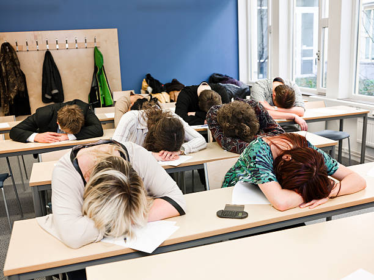

Szerintem a jövő iskolája olyan hely lenne, ahol a tanulás élvezetes és hasznos. A diákok aktívan részt vennének a tanulási folyamatban, és nem csak passzív befogadók lennének.
Nincs problémám a tanárokkal sem a tananyaggal, de vannak valamikor unalmas órák, amelyeken teljesen haszontalan dolgokat tanulunk ezért azoknak a megtartását teljesen feleslegesnek tartom.
A tanórák inkább projektek lennének, nem klasszikus 45 perces órák. Több csapatmunka, kevesebb unalmas jegyzetelés és több gyakorlati feladat lenne.
A tanárok segítőkészek lennének, lehetne tőlük kérdezni, és nem lenne baj, ha valaki hibázik. Inkább mentor szerepet töltenének be az órákon, nem szigorú főnökök lennének, akik elvárják a tökéletességet.
Több olyan tantárgy lenne, ami az életre készít fel, például pénzügyi ismeretek és életvezetés stb. Az értékelés nem csak jegyekből állna, hanem szöveges visszajelzésekből is, amelyek pozitív hatással lennének a tanulókra, hogy miben kell még fejlődniük.
Készítette: Nagy Zsombor